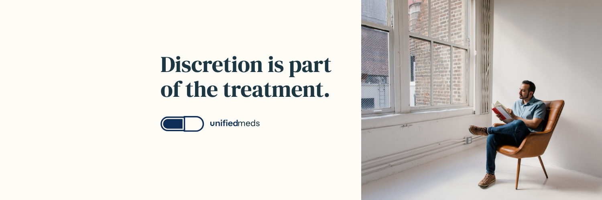
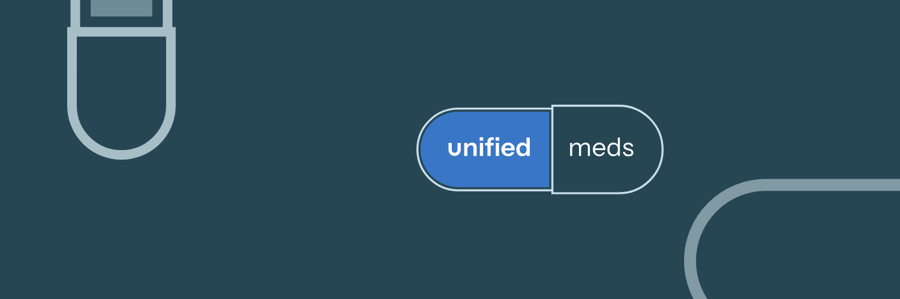
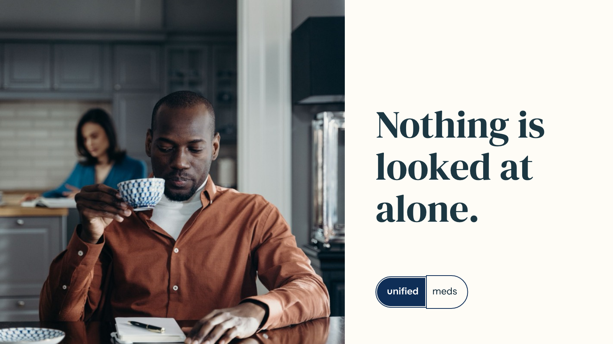
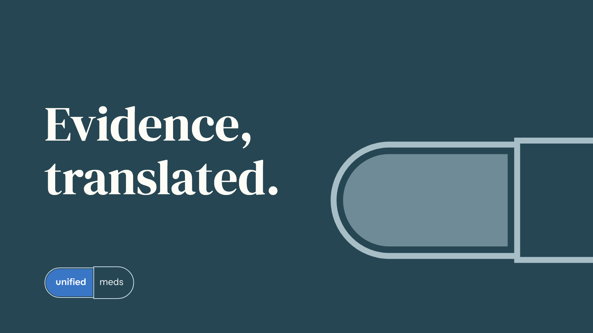
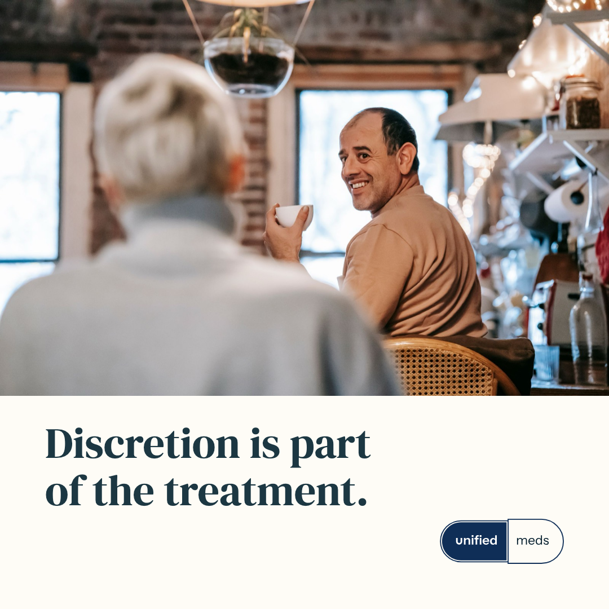
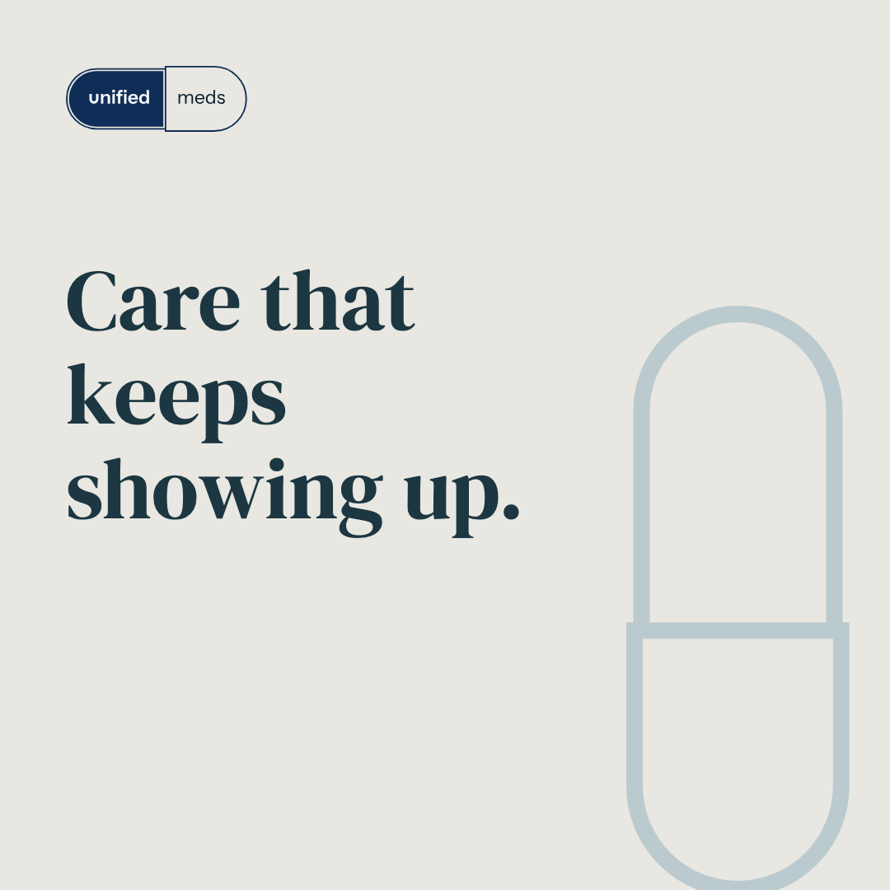
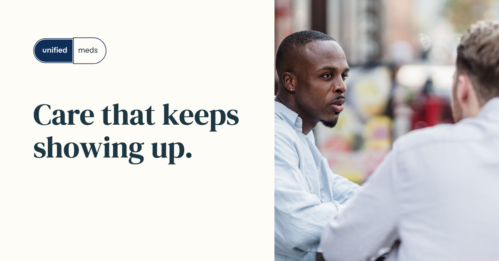
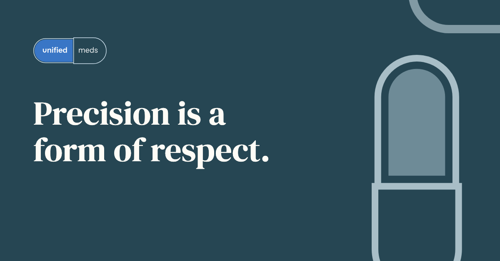

Profile picture.
Shown as a circle on the profile, every post and every reply.
- Size
- 400 × 400 px
- Ratio
- 1:1
- File
- PNG
- Max file size
- PNG or JPG, under 2 MB
- Safe zones
- Circle crop
Everything the unifiedmeds X profile needs, in two options each: Option A is calm and editorial, Option B is graphic. Each asset shows how it reads on a desktop timeline and on a phone.
The kit is approved for use. The profile picture is Option B, the white u|m on Navy (R-93, U-27). Handles, bios and lines are placeholders or candidates; legal approves every post before it runs (U-30). Shared rules for every channel: Social overview.
Option A or B per asset (Avi). Photos are Pexels stand-ins, not approved, to replace before anything is posted (R-39, O-13).
The kit's profile picture and banner in place, on a desktop browser and on a 390 phone. Dashed lines mark what each screen crops or covers.

Men's health care, online. An assessment, reviewed by a licensed provider. Assessment only. Not a diagnosis. [link]
Men's health care, online. An assessment, reviewed by a licensed provider. Assessment only. Not a diagnosis. [link]

Men's health care, online. An assessment, reviewed by a licensed provider. Assessment only. Not a diagnosis. [link]
Men's health care, online. An assessment, reviewed by a licensed provider. Assessment only. Not a diagnosis. [link]
One block per asset: the use, the exact size, the safe zones, then Option A (calm, photo-led) and Option B (graphic, the capsule kit) side by side, and the asset in its real context.
Profile picture · Header · Post image, 16:9 · Post image, 1:1 · Link card image
Shown as a circle on the profile, every post and every reply.
The banner above the profile. The profile picture overlaps its lower left; phones trim the top and bottom.
A single image in a post. Shown whole in the timeline on phone and desktop.


Every answer is read by a licensed provider. They decide the next step with you. Assessment only. Not a diagnosis. [link]
Square image posts and the first image of a set.


Every answer is read by a licensed provider. They decide the next step with you. Assessment only. Not a diagnosis. [link]
The large image card a shared website link shows (twitter:image). X lays the domain over the lower left.


Care that keeps showing up, without a waiting room. [link]
Most people meet this channel on a phone. Sizes in px are on the exported file unless marked; display sizes are approximate and platforms change them, so check before a campaign.
| Asset | Desktop shows | Phone shows | Keep inside the safe zone | Smallest type that stays readable on a phone |
|---|---|---|---|---|
| Profile picture | 133 px circle on the profile, 40 px on posts | 80 px circle, 40 px on posts | The mark inside the circle | No type |
| Header | Full 3:1, about 600 px wide | 3:1 at phone width; top and bottom trimmed under the status bar | Type in the band y 60 to 440, clear of the avatar (lower left) | Serif 56 px on the file (about 15 px on a phone): keep it one short line |
| Post image 16:9 | Full, about 516 px wide | Full, phone width | 80 px margin | Serif 100 px on a 1600 file |
| Post image 1:1 | Full, about 516 px wide | Full, phone width | 60 px margin | Serif 76 px |
| Card image | Full 1.91:1 with the domain on top | Same, phone width | Lower left clear for the domain label | Serif 72 px |
Discreet, plain and short. No prescription names in any social asset or caption, no promise of results, no before and after. Square brackets mark what Avi or legal fills in.
Men's health care, online. An assessment, reviewed by a licensed provider. Assessment only. Not a diagnosis. [link]
115 of 160 charactersDiscretion is part of the treatment. Online assessments, read by licensed providers. Assessment only. Not a diagnosis. [link]
125 of 160 charactersEvery answer is read by a licensed provider. They decide the next step with you. Assessment only. Not a diagnosis. [link]
What a provider looks at, in plain words: [link]
Care that keeps showing up, without a waiting room. [link]
Zero or one hashtag (#unifiedmeds or none). Never a condition, symptom or medicine. A website link makes the card appear; keep the copy short so the card does the talking. UTM tags on every link.
On top of the shared social rules and the rules on Voice and compliance.
Every file at its exact size. PNG to upload; SVG to edit.
| Asset | Option | File | Pixels | File size | Download |
|---|---|---|---|---|---|
| Profile picture | A | x-avatar-a.png | 400 × 400 | PNG 8 KB | PNG · SVG |
| Profile picture | B | x-avatar-b.png | 400 × 400 | PNG 8 KB | PNG · SVG |
| Header | A | x-header-a.png | 1500 × 500 | PNG 362 KB | PNG · SVG |
| Header | B | x-header-b.png | 1500 × 500 | PNG 23 KB | PNG · SVG |
| Post image, 16:9 | A | x-post-wide-a.png | 1600 × 900 | PNG 783 KB | PNG · SVG |
| Post image, 16:9 | B | x-post-wide-b.png | 1600 × 900 | PNG 50 KB | PNG · SVG |
| Post image, 1:1 | A | x-post-square-a.png | 1080 × 1080 | PNG 905 KB | PNG · SVG |
| Post image, 1:1 | B | x-post-square-b.png | 1080 × 1080 | PNG 50 KB | PNG · SVG |
| Link card image | A | x-card-a.png | 1200 × 628 | PNG 361 KB | PNG · SVG |
| Link card image | B | x-card-b.png | 1200 × 628 | PNG 37 KB | PNG · SVG |
Photo-led files over 1 MB also come as JPG (quality 80): upload the JPG where the platform recompresses anyway. SVG files keep live type (DM Serif Display, Inter, loaded from Google Fonts) and link the photos in assets/photos/; open them in a browser or Figma with the fonts installed. Rebuild every file: python3 -I assets/social/shared/make_social.py, then python3 -I assets/social/shared/build_kit_pages.py and python3 -I tools/build_pages.py.